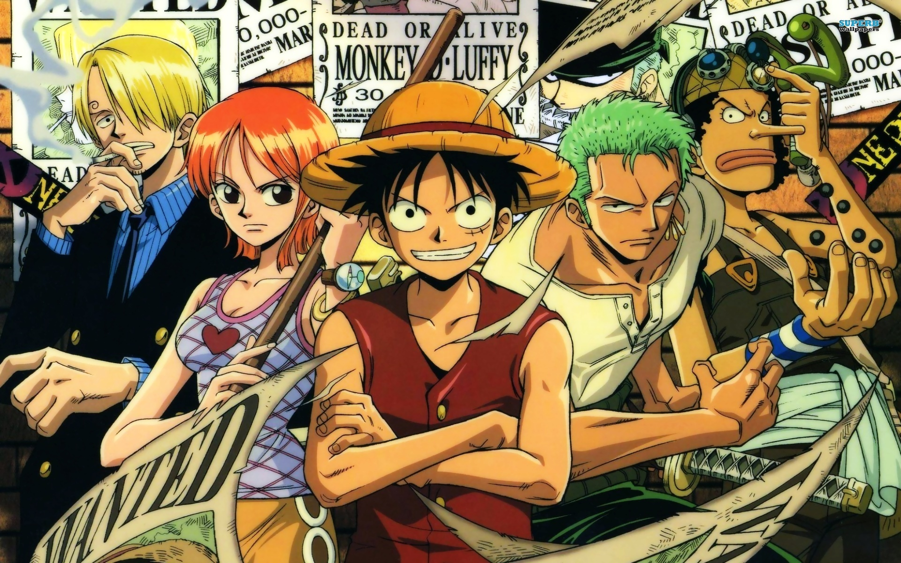

-
東海篇
第1～12卷；第1～100話蒙其·D·魯夫童年時受到海賊紅髮傑克的啟蒙，自小就立志要成為「海賊王」。17歲時他出海之後，接續遇見了海賊獵人羅羅亞·索隆、航海士娜美、狙擊手騙人布、廚師香吉士等人並結為夥伴而組成了草帽海賊團。他們先後擊敗了小丑巴奇、克洛船長、海賊艦長克力克以及惡龍海賊團團長─鋸齒惡龍，準備進入偉大的航道來到羅格鎮。離開羅格鎮後，一伙人在偉大的航路的入口──顛倒山之前以各自的夢想立誓，跨越顛倒山之後進入了偉大的航路，展開下一段冒險。
 -
阿拉巴斯坦篇
第12～23卷；第101～216話草帽海賊團一行人來到偉大的航路、在威士忌山峰遇到臥底在秘密犯罪組織巴洛克華克的阿拉巴斯坦王國公主 娜菲魯塔利·薇薇，從公主口中得知阿拉巴斯坦正處於水深火熱之中，以及王下七武海『Mr.0』沙·克洛克達爾的陰謀後，魯夫決定幫助這位公主。在途中前往島嶼「小花園」與巴洛克華克的部分成員開戰，並在旅途中為了治好在小花園生病的娜美去了磁鼓島並增添了一名船醫夥伴喬巴。抵達阿拉巴斯坦後，當地因為克洛克達爾的煽動爆發內戰，魯夫擊敗了克洛克達爾，內戰亦隨之結束。其後薇薇向魯夫等人道別，而原巴洛克華克副社長妮可·羅賓，因失去人生目標，以考古學家的身份加入了草帽海賊團。

-
空島篇
第24～32卷；第217～302話離開阿拉巴斯坦王國之後，草帽海賊團撞見一艘從天而降的大船，同時紀錄指針竟然向上指向天空。對空島產生興趣的魯夫靠著上升海流前往空島。原以為會是個很特別又愉快的旅程，卻在誤入了空島統治者「神」艾涅爾的領地後變了調，草帽海賊團、神的軍團、以及領地原住民「香狄亞」展開激戰，艾涅爾最終被擊敗，魯夫敲響黃金鐘證明了原本加亞島的存在，而空島居民和香狄亞一族長達四百年的戰爭也終止了。

-
長環長島篇
第32～34卷；第303～321話草帽海賊團遇見專門以Davy Back Fight遊戲搶奪其它海賊團船員的銀狐福克西，船醫喬巴被其搶走，兩個海賊團展開了對決。在勝利之後，遇見海軍最高戰力─上將青雉，羅賓與魯夫先後被具有冰凍果實能力的青雉輕易擊敗，並讓羅賓在這裡萌生了不想再讓草帽海賊團承擔風險的想法。
-
水之七島篇
第34～39卷；第322～374話為了修繕傷痕累累的前進梅利號，草帽海賊團來到以造船業聞名的水之七島，卻得知梅莉號已經無法修復的消息，騙人布又因慘敗給拆船流氓佛朗基失去了海賊團寶貴的兩億元資金，與魯夫大吵一架後決裂 ，因而離團。另一方面，妮可·羅賓遇見了政府機關CP9，由於害怕過去發生在自己故鄉的悲劇重演在草帽海賊團上，因此自願被CP9帶走。草帽海賊團分崩離析。
-
司法島艾尼斯大廳篇
第39～46卷；第375～441話草帽海賊團得知羅賓的真實想法，因而前往司法島救回羅賓，與世界政府底下的CP9部隊全面對決，最後雖救回羅賓，但是創造奇蹟的梅莉號卻完全毀損，百般不願之下，魯夫燒毀了大限已至的梅利號，卻聽到了梅莉的道歉與感謝，構成航海王最感動的一幕。戰鬥結束後，佛朗基用當初偷來的兩億貝里建造了一艘新船千陽號，使得草帽海賊團可以繼續出海冒險，而佛朗基也以船匠的身分加入海賊團。騙人布也在最後之際，以一句真誠的對不起得到原諒而回到團裡。
-
恐怖三桅帆船篇
第46～50卷；第442～489話草帽海賊團踏入魔幻的三桅帆船地帶，遇見骷髏人布魯克，並與王下七武海之一的月光摩利亞產生衝突，草帽三強：魯夫、索隆和香吉士的影子皆被奪走。最後百般辛苦下，魯夫擊敗了摩利亞，卻贏來另一位七武海─巴索羅繆‧大熊的襲擊，就在魯夫將被抓走之際，索隆挺身而出保護了魯夫。全部戰鬥結束後，布魯克也以音樂家的身分加入草帽海賊團。
-
夏波帝諸島篇
第50～53卷；第490～513話草帽海賊團進入偉大的航路前半段的最末端夏波帝諸島，在貴族天龍人起了衝突，之後遇到黃猿、戰桃丸以及改造人攻擊，到最後巴索羅謬大熊幫助草帽海賊團逃脫，把各個船員擊飛至不同的島嶼。
-
女人島篇
第53～54卷；第514－523話被擊飛至女人島的魯夫遇見島上的女帝蛇姬，不僅犯了女人島重罪，更得知了女帝的秘密，盛怒之下，女帝決定處死魯夫。但在魯夫實力與器量之下，反而吸引了女帝的目光，更讓女帝愛上了他，在女人島休憩的中途，輾轉更得知自己的兄長火拳艾斯要被處決，便請蛇姬將自己偷渡至監獄「推進城」中。
-
推進城篇
第54～56卷；第524～549話魯夫在推進城遇見過去的敵人，原本順利的劫獄計畫，卻完全被典獄長麥哲倫破壞地支離破碎，不僅因為典獄長的毒毒果實能力離死亡不遠，還有可能無法再次看到外面的天空，好在與自己父親的好搭檔艾波利歐·伊娃科夫見面，馬上決定開始集結監獄總戰力展開越獄行動。最後成功越獄，魯夫一行人來到處刑的場所海軍本部馬林福特。
-
馬林福特篇
第56～61卷；第550～597話魯夫和越獄同伴、以及為了救艾斯而來的白鬍子海賊團、海軍的三上將以及眾多海軍展開了「頂點戰爭」，雖一度救出艾斯，但還是在最後讓艾斯與白鬍子死亡了，而黑鬍子更用了未知的方法得到白鬍子震動果實的能力，戰爭在眾人的理智斷線下，幾乎完全無法停止，最後在紅髮傑克的出現下，停止了這場戰爭。
-
決斷
第61卷；第597話深知了自己目前的實力無法立足於新世界的魯夫，在前羅傑海賊團副團長席爾巴斯·雷利的建議下，決定把原本3天後要在夏波帝諸島重聚的約定，延後到兩年後。魯夫此舉除了希望大家彼此可以都增強自己的實力，更是希望自己以後可以擁有保護眾人的力量，兩年後到底會有什麼變化呢？